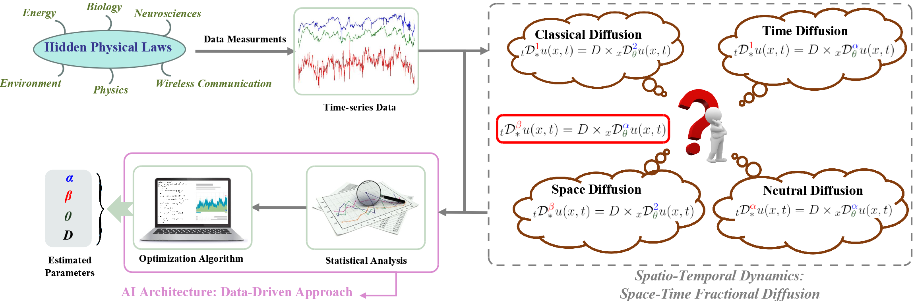

|  |
Abstract: A plethora of complex dynamical systems from disordered media to biological systems exhibit mathematical characteristics (e.g., long-range dependence, self-similar and power law magnitude increments) that are well fitted by fractional partial differential equations (PDEs). For instance, some biological systems displaying an anomalous diffusion behavior, which is characterized by a nonlinear mean-square displacement relation, can be mathematically described by fractional PDEs. In general, the PDEs represent various physical laws or rules governing complex dynamical systems. Since prior knowledge about the mathematical equations describing complex dynamical systems in biology, healthcare, disaster mitigation, transportation, or environmental sciences may not be available, we aim to provide algorithmic strategies to discover the integer or fractional PDEs and their parameters from system's evolution data. Towards deciphering non-trivial mechanisms driving a complex system, we propose a data-driven approach that estimates the parameters of a fractional PDE model. We study the space-time fractional diffusion model that describes a complex stochastic process, where the magnitude and the time increments are stable processes. Starting from limited time-series data recorded while the system is evolving, we develop a fractional-order moments-based approach to determine the parameters of a generalized fractional PDE. We formulate two optimization problems to allow us to estimate the arguments of the fractional PDE. Employing extensive simulation studies, we show that the proposed approach is effective at retrieving the relevant parameters of the space-time fractional PDE. The presented mathematical approach can be further enhanced and generalized to include additional operators that may help to identify the dominant rule governing the measurements or to determine the degree to which multiple physical laws contribute to the observed dynamics.
[paper] [code]